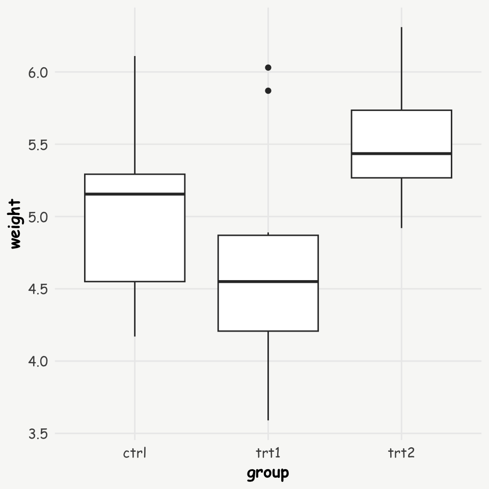
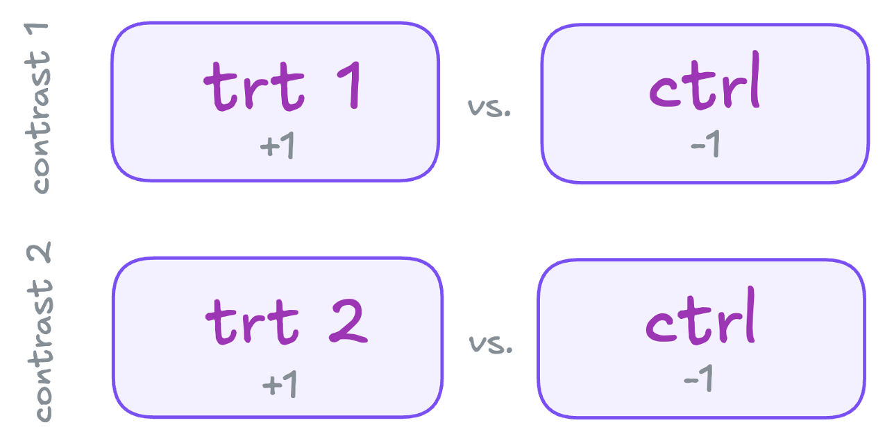
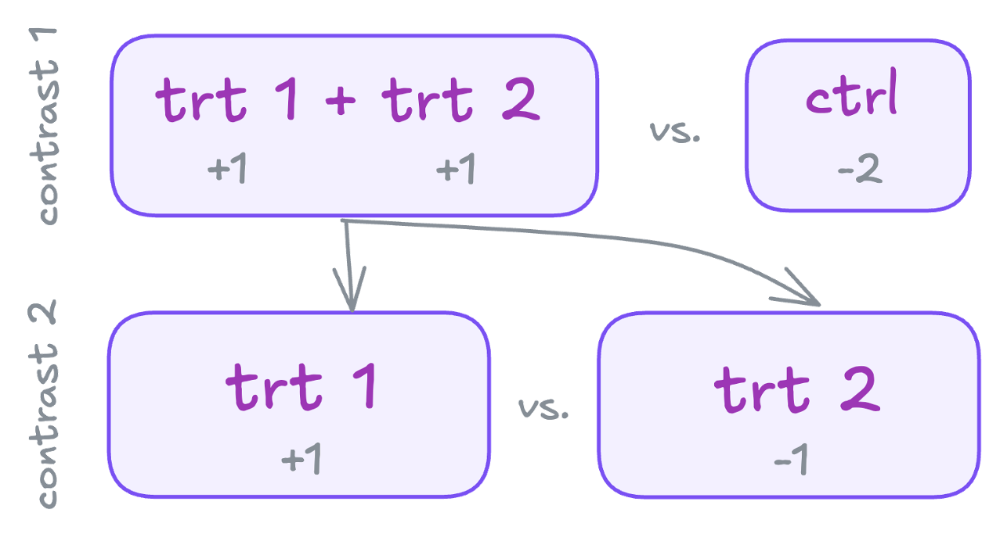

Contrasts and Multiple Testing in R
When using regression models in R (lm(), glm(), etc.) that include factor variables as predictors, the default behavior is to compare each factor level to the reference category (typically the first level). These comparisons, known as contrasts, need attention for two reasons:
Default contrasts often don’t align with the key comparisons you’re actually interested in. You might have specific hypotheses in mind that require planned contrasts — custom comparisons between levels or groups that better address your research questions.
For factor variable with more than two levels, default comparisons are often non-independent (non-orthogonal), meaning they overlap. This overlap makes it necessary to apply adjustments for multiple testing to avoid incorrect conclusions.
This blog post hopefully helps to understand and apply contrasts in R, using a practical example and explaining some theory along the way.
Here are the references that helped me dive into the topic:
- Field, A. An adventure in statistics: The reality enigma. Sage publications, 2016. statisticsadventure.com.
- Field A, Miles J, Field Z. Discovering statistics using R. Sage publications, 2012. discovr.rocks.
- Hothorn T, Bretz F, Westfall P. Simultaneous Inference in General Parametric Models. Biometrical Journal, 50(3), 346–363, 2008. Link PDF.
- Meier, Lukas. ANOVA and mixed models: a short introduction using R. Chapman and Hall/CRC, 2022. Online Version.
- StackOverflow: How to set contrasts for my variable in regression analysis with R
- A (sort of) Complete Guide to Contrasts in R by Rose Maier
Illustrative Example: Plant Growth Experiment
Let’s use a dataset from an experiment comparing plant yields (measured as weight) between two treatment groups and a control group. This data is available in R’s datasets package.
Let’s first look at the data, and run a simple linear regression model:
R Code
library(datasets)
data("PlantGrowth")
# plot
ggplot(data = PlantGrowth, aes(x = group, y = weight)) +
geom_boxplot()
# regression model
lm.mod.nonorth <- lm(weight ~ group, data = PlantGrowth)
summary(lm.mod.nonorth)
Call:
lm(formula = weight ~ group, data = PlantGrowth)
Residuals:
Min 1Q Median 3Q Max
-1.0710 -0.4180 -0.0060 0.2627 1.3690
Coefficients:
Estimate Std. Error t value Pr(>|t|)
(Intercept) 5.0320 0.1971 25.527 <2e-16 ***
grouptrt1 -0.3710 0.2788 -1.331 0.1944
grouptrt2 0.4940 0.2788 1.772 0.0877 .
---
Signif. codes: 0 '***' 0.001 '**' 0.01 '*' 0.05 '.' 0.1 ' ' 1
Residual standard error: 0.6234 on 27 degrees of freedom
Multiple R-squared: 0.2641, Adjusted R-squared: 0.2096
F-statistic: 4.846 on 2 and 27 DF, p-value: 0.01591Understanding Contrasts
I highly recommend Andy Field’s books (Field, Miles, and Field 2012; Field 2016) for understanding contrasts. This sections’ content builds on his explanations, however, his books offer much more comprehensive and detailed descriptions.
By default, lm() compares each treatment level against the control group (the first level of the factor). The regression coefficients represent the differences in means between each treatment and the control group (\(\overline{w}_{k}\) = mean weight of group k):
Group means:
R Code
PlantGrowth %>%
group_by(group) %>%
summarise(mean = mean(weight))# A tibble: 3 × 2
group mean
<fct> <dbl>
1 ctrl 5.03
2 trt1 4.66
3 trt2 5.53Differences in means:
- \(\overline{w}_{trt1} - \overline{w}_{ctrl}\) = 4.66 - 5.03 = -0.371
- \(\overline{w}_{trt2} - \overline{w}_{ctrl}\) = 5.53 - 5.03 = 0.494
These default comparisons are known as treatment contrasts. The reference level can easily be changed in R using the function relevel(), e.g. for setting trt1 as the reference level: PlantGrowth$group <- relevel(PlantGrowth$group, ref = 'trt1'). Changing the reference level might already help to assess certain comparisons of interest, but might not include all of them. Therefore, manually defined planned contrasts might be needed.
Treatment Contrasts (default)
In order to understand how specific contrasts can be generated, it might be helpful to illustrate the setup based on the default setting from above.
Schematically the comparisons can be illustrated as follows:

This can be translated into a matrix using a dummy coding scheme, with weights (grey numbers in the scheme on the left) indicating the individual comparisons:
| Group levels | trt1 vs. ctrl | trt2 vs. ctrl |
|---|---|---|
| ctrl | -1 | -1 |
| trt1 | 1 | 0 |
| trt2 | 0 | 1 |
| sum | 0 | 0 |
These represent non-independent or non-orthogonal contrasts because the control group is used twice. Further details about orthogonal and non-orthogonal contrasts, see this section.
There are a couple of rules which need to be followed in order to set the contrasts matrix right:
- 1: levels/groups with positive weights are compared to levels/groups with negative weights
- 2: those groups not included in a contrast should be assigned weights of zero
- 3: for each contrast, the sum of the weights need to add up to zero (last row).
The contrasts serve as dummy variables in the linear model:
\(w_{i} = b_{0} + b_{1}Contrast1_{i} + b_{2}Contrast2_{i}\)
where the mean of each group can be presented with the following formulas:
- \(\overline{w}_{ctrl} = b_{0} + (-1*b_{1}) + (-1*b_{2})\)
- \(\overline{w}_{trt1} = b_{0} + ( 1*b_{1}) + ( 0*b_{2})\)
- \(\overline{w}_{trt2} = b_{0} + ( 0*b_{1}) + ( 1*b_{2})\)
Planned Contrasts
Often, you’ll want to make specific comparisons that don’t align with the default contrasts. For example, you might want to compare:
- The combined treatment groups vs. the control group
- The difference between the two treatment groups

These can be represented in a new contrast matrix:
| Group levels | trt1 + trt2 vs. ctrl | trt2 vs. trt1 |
|---|---|---|
| ctrl | -2 | 0 |
| trt1 | 1 | -1 |
| trt2 | 1 | 1 |
| sum | 0 | 0 |
These represent independent (orthogonal) contrasts, because each group is only used once. For the difference between orthogonal and non-orthogonal contrasts, again see this section.
Implementing Contrasts
I find Rose Maier’s article a great practical guide for implementing contrasts in R.
R provides several predefined functions for setting contrasts automatically. For example, treatment contrasts can be implemented using contr.treatment(n = 3, base = 'ctrl'). Here, n specifies the number of factor levels, while base indicates the reference category. Other built-in options include Helmert contrasts, which can be set using contr.helmert(). In Helmert contrasts, each level is compared to the mean of the subsequent levels. For instance, with our data this would compare: \(ctr\) vs. \(mean(trt_{1} + trt_{2})\) and \(trt_{1}\) vs. \(trt_{2}\).
To see these custom contrasts in action, R offers three main approaches for implementing them (see also this converstation on stackoverflow):
Global Contrast Settings: Set contrasts globally using
options("contrasts" = c('contr.helmert', 'contr.poly')). The first element stands for the contrasts in unordered, and the second for ordered factor variables. These become your default contrasts for all models.Data Frame-Level Contrasts: Define contrasts directly in the data frame. For example, if the factor variable is releveled, the treatment contrast is adjusted accordingly in the data itself. Or one can set manually designed contrasts by using the following line of code:
contrasts(PlantGrowth$group) <- cbind(c(-2, 1, 1), c(0, -1, 1)). These correspond to the planned contrasts from above.Model-Level Specification: Specify contrasts in the model.
- using
contrastsargument withinlm() - using
glht()from themultcomppackage
- using
The third method offers the most flexibility and is my preferred way. Let’s explore the two main approaches within this method, using planned orthogonal contrast example from above.
Approach I: contrasts argument within lm()
Include the inverse of contrast matrix in the contrasts-argument of lm()/ glm(). It is important to always take the inverse of the contrast matrix, otherwise the estimates get messed up and are not interpretable in the usual way.
First, build the (orthogonal) contrasts matrix (make sure the weights are correctly ordered according to the order of the factor levels):
trt1plus2_vs_ctrl <- c(-2, 1, 1)
trt2_vs_trt1 <- c(0, -1, 1)
(contrast.matrix.orth <- rbind(trt1plus2_vs_ctrl, trt2_vs_trt1)) [,1] [,2] [,3]
trt1plus2_vs_ctrl -2 1 1
trt2_vs_trt1 0 -1 1Second, take the inverse of the matrix (because the contrast argument expects the inverse):
inv.contrast.matrix <- MASS::ginv(contrast.matrix.orth)
colnames(inv.contrast.matrix) <- rownames(contrast.matrix.orth); inv.contrast.matrix trt1plus2_vs_ctrl trt2_vs_trt1
[1,] -0.3333333 7.514131e-17
[2,] 0.1666667 -5.000000e-01
[3,] 0.1666667 5.000000e-01Third, run the linear model including the inverse matrix into the contrast argument:
lm.mod.orth <- lm(weight ~ group,
data = PlantGrowth,
contrasts = list(group = inv.contrast.matrix))
summary(lm.mod.orth)
Call:
lm(formula = weight ~ group, data = PlantGrowth, contrasts = list(group = inv.contrast.matrix))
Residuals:
Min 1Q Median 3Q Max
-1.0710 -0.4180 -0.0060 0.2627 1.3690
Coefficients:
Estimate Std. Error t value Pr(>|t|)
(Intercept) 5.0730 0.1138 44.573 < 2e-16 ***
grouptrt1plus2_vs_ctrl 0.1230 0.4829 0.255 0.80086
grouptrt2_vs_trt1 0.8650 0.2788 3.103 0.00446 **
---
Signif. codes: 0 '***' 0.001 '**' 0.01 '*' 0.05 '.' 0.1 ' ' 1
Residual standard error: 0.6234 on 27 degrees of freedom
Multiple R-squared: 0.2641, Adjusted R-squared: 0.2096
F-statistic: 4.846 on 2 and 27 DF, p-value: 0.01591Approach II: glht() from the multcomp package
First, build the (orthogonal) contrasts matrix. Here I use a different way of constructing the contrasts matrix:
Input = "
Contrast ctrl trt1 trt2
trt1plus2_vs_ctrl -2 1 1
trt2_vs_trt1 0 -1 1
"
(contrast.matrix.orth <- as.matrix(read.table(textConnection(Input),
header = T,
row.names = 1))) ctrl trt1 trt2
trt1plus2_vs_ctrl -2 1 1
trt2_vs_trt1 0 -1 1Second, apply the glht() function from multcomp on the default model (lm.mod.nonorth) with the contrast matrix as the linear function (linfct) argument:
glht.mod.orth <- multcomp::glht(lm.mod.nonorth, linfct = mcp(group = contrast.matrix.orth))Third, get the summary statistics (for now using no adjustment for multiple testing):
summary(glht.mod.orth, test = adjusted('none'))
Simultaneous Tests for General Linear Hypotheses
Multiple Comparisons of Means: User-defined Contrasts
Fit: lm(formula = weight ~ group, data = PlantGrowth)
Linear Hypotheses:
Estimate Std. Error t value Pr(>|t|)
trt1plus2_vs_ctrl == 0 0.1230 0.4829 0.255 0.80086
trt2_vs_trt1 == 0 0.8650 0.2788 3.103 0.00446 **
---
Signif. codes: 0 '***' 0.001 '**' 0.01 '*' 0.05 '.' 0.1 ' ' 1
(Adjusted p values reported -- none method)While the second approach may seem a bit less intuitive, it provides good options for controlling for multiple comparisons - for further information see the section on Handling Multiple Comparisons. For this reason, it’s my preferred method, especially when dealing with non-orthogonal contrasts.
If we were to use the same contrast setting as the default, the results would be identical to the default linear model lm.mod.nonorth without a contrast argument:
Orthogonal vs. Non-Orthogonal Contrasts
Understanding the difference between orthogonal and non-orthogonal contrasts is essential, and also here Andy Field’s book (Field, Miles, and Field 2012) is as a great resource.
In brief:
- Orthogonal contrasts are independent comparisons. This means each data, and thus, variance component is only used once. No adjustment for multiple testing is needed.
- Non-orthogonal contrasts involve overlapping comparisons. They require adjustment for multiple testing to control the familywise/ experimentwise error rate (the probability of a Type I error increases when using the same data multiple times).
To determine if contrasts are orthogonal, we need to check if the sum of the row-wise contrast-products of the weights adds up to 0.
Orthogonal Contrasts
In orthogonal contrasts, the sum of the row-wise contrast products of the weights always equals zero, indicating that the contrasts are independent. Below is the contrast matrix from above, now with an additional column showing the contrast products. At first glance, it may seem like trt1 and trt2 are used multiple times, raising doubts about the independence of these contrasts. However, each is only used once. The first contrast combines trt1 and trt2, representing a distinct variance component. The fact that the sum equals zero confirms that these contrasts are indeed independent (i.e., orthogonal).
| Group levels | trt1 + trt2 vs. ctrl | trt2 vs. trt1 | Product of contrasts |
|---|---|---|---|
| ctrl | -2 | 0 | 0 |
| trt1 | 1 | -1 | -1 |
| trt2 | 1 | 1 | 1 |
| sum | 0 | 0 | 0 |
Non-orthogonal Contrasts and the Multiplicity Problem
In non-orthogonal contrasts, the sum of the row-wise contrast products of the weights in the contrast matrix does not equal zero, indicating that the contrasts are not independent. For example, in default treatment contrasts, the control group is used multiple times:
| Group levels | trt1 vs. ctrl | trt2 vs. ctrl | Product of contrasts |
|---|---|---|---|
| ctrl | -1 | -1 | 1 |
| trt1 | 1 | 0 | 0 |
| trt2 | 0 | 1 | 0 |
| sum | 0 | 0 | 1 |
This reuse of the control group creates overlapping variance components, which inflates our risk of false positives (elevated familywise error rate), and is known as the problem of multiplicity. To maintain valid statistical conclusions, we need to adjust for these multiple comparisons.
Handling Multiple Comparisons
When using R’s standard regression functions (lm(), glm(), etc.), we face three important issues:
- They use non-orthogonal default contrasts (in case of factor variables with more than 2 levels)
- They don’t automatically adjust for multiple comparisons
- They provide no warning about the need for such adjustments
Left unaddressed, these issues can lead to Type I errors – finding “significant” differences that don’t actually exist. There are basically two approaches to handle this:
Orthogonal Contrasts: Restructure the comparisons to be independent of each other. This may not be feasible if it doesn’t align with research questions.
Statistical Adjustments: Apply multiple comparison procedures to adjust test statistics. This is recommended when orthogonal contrasts aren’t suitable.
For implementing these statistical adjustments, the multcomp package (Hothorn, Bretz, and Westfall 2008) provides robust tools for both testing and constructing confidence intervals. Let’s see how this works with our non-orthogonal (default) contrasts model (see “Add On: Replicating Default Contrasts”):
Unadjusted P-values
# Get non-adjusted p-values (equivalent to standard lm output)
summary(glht.mod.nonorth, test = adjusted('none'))
Simultaneous Tests for General Linear Hypotheses
Multiple Comparisons of Means: User-defined Contrasts
Fit: lm(formula = weight ~ group, data = PlantGrowth, contrasts = list(group = inv.contrast.matrix))
Linear Hypotheses:
Estimate Std. Error t value Pr(>|t|)
trt2_vs_ctrl == 0 0.4940 0.2788 1.772 0.0877 .
trt1_vs_ctrl == 0 -0.3710 0.2788 -1.331 0.1944
---
Signif. codes: 0 '***' 0.001 '**' 0.01 '*' 0.05 '.' 0.1 ' ' 1
(Adjusted p values reported -- none method)Adjusted P-values
# Get adjusted p-values using the single-step method (default)
summary(glht.mod.nonorth, test = adjusted('single-step'))
Simultaneous Tests for General Linear Hypotheses
Multiple Comparisons of Means: User-defined Contrasts
Fit: lm(formula = weight ~ group, data = PlantGrowth, contrasts = list(group = inv.contrast.matrix))
Linear Hypotheses:
Estimate Std. Error t value Pr(>|t|)
trt2_vs_ctrl == 0 0.4940 0.2788 1.772 0.153
trt1_vs_ctrl == 0 -0.3710 0.2788 -1.331 0.323
(Adjusted p values reported -- single-step method)After applying multiple comparison adjustments, the p-values increase noticeably, making the statistical inference more conservative. This reinforces the initial conclusion of insufficient evidence against the null hypothesis of no difference between treatments.
Unadjusted Confidence Intervals
We can calculate the default confidence intervals “by hand”…
se <- sqrt(diag(vcov(lm.mod.nonorth)))
(cbind(estimate = coef(lm.mod.nonorth),
lwr = coef(lm.mod.nonorth) - 1.96 * se,
upr = coef(lm.mod.nonorth) + 1.96 * se)) estimate lwr upr
(Intercept) 5.073 4.84992825 5.296072
grouptrt1_vs_ctrl -0.371 -0.91741195 0.175412
grouptrt2_vs_ctrl 0.494 -0.05241195 1.040412…or we use the default method of the confint() function:
confint.default(lm.mod.nonorth) 2.5 % 97.5 %
(Intercept) 4.84993235 5.2960676
grouptrt1_vs_ctrl -0.91740191 0.1754019
grouptrt2_vs_ctrl -0.05240191 1.0404019Adjusted Conficence Intervals
Using the function confint() on a glht-object computes adjusted confidence intervals.
confint(glht.mod.nonorth) # see ?confint.glht
Simultaneous Confidence Intervals
Multiple Comparisons of Means: User-defined Contrasts
Fit: lm(formula = weight ~ group, data = PlantGrowth, contrasts = list(group = inv.contrast.matrix))
Quantile = 2.3335
95% family-wise confidence level
Linear Hypotheses:
Estimate lwr upr
trt2_vs_ctrl == 0 0.4940 -0.1565 1.1445
trt1_vs_ctrl == 0 -0.3710 -1.0215 0.2795Note: when using summary() on a glht-object, the represented standard errors are not adjusted (only p-values are adjusted by default)!
As with adjusting p-values for multiplicity, using adjusted confidence intervals also leads to more conservative inferences (i.e. broader confidence intervals).
Summary
When comparing more than two groups:
- Consider using orthogonal contrasts if they align with your research questions. These don’t require adjustment for multiple testing.
- If your questions necessitate non-orthogonal comparisons, be sure to adjust your test statistics accordingly.
By understanding and properly implementing contrasts, you can ensure that your statistical analyses accurately reflect your research questions and maintain appropriate control over Type I error rates.